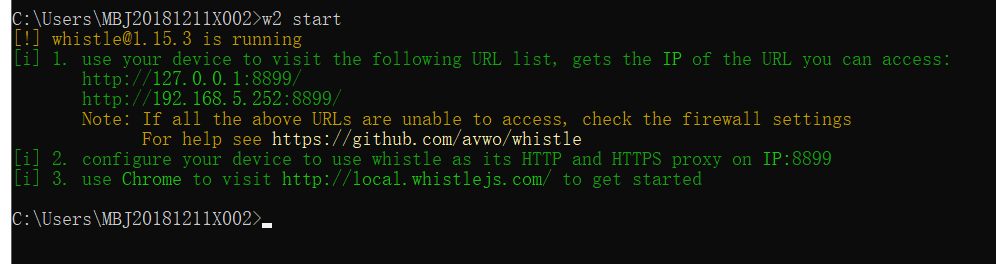
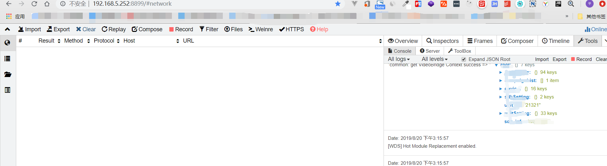
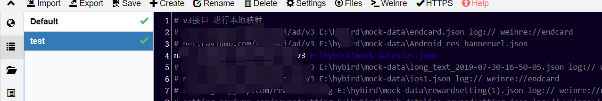
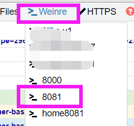
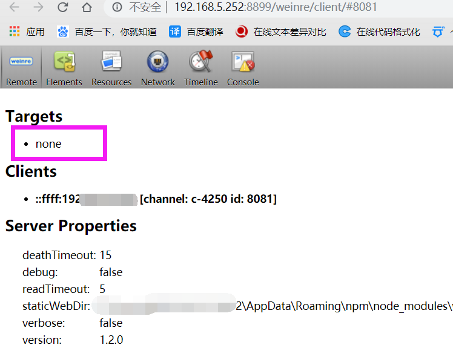

npm全局安装
npm install -g whistle全局启动
w2 start
启动之后，输入127.0.0.1:8899 就可以访问到whistle调试界面了：

我们主要常用几个功能：
1、mock本地数据映射，即手机请求线上某个接口的时候做本地映射，直接请求本地json数据
2、查看console打印信息，对于windows系统的电脑来说还是很有用的，否则调试ios是个很大的麻烦

点击该调试界面的左边第二个按钮，rules，输入想要拦截的接口 空格 本地mock数据文件路径
eg:
net.abc.com/getlist E:\project\mock-data\ios.json如果想要注释掉此行，前面加 “ # ”
如果想要调试某个页面，在页面后面加 weinre:// 任意名称
如果要查看某个页面的log，在页面后面加 log://
这些都可以同时写在一起如下：
192.168.5.252:3001/aaa.html log:// weinre://aaa
1、手机在连着和电脑同一个局域网下，手机进入wifi设置，设置代理为手动，IP地址为电脑IP地址，端口号为whistle本地调试界面打开的端口号，这里是8899
2、安装证书，手机浏览器输入rootca.pro （或者在调试界面点HTTPS，手机扫描即可跳转） ,会跳转到下载证书界面，点击下载好之后安装，安卓需要起个名字，ios需要在 设置——通用——关于本机——证书信任设置中开关置为开。
注意：很多浏览器不支持下载此类文件，或者有些浏览器虽然可以下载此类文件但是无法安装，因为不识别相应文件格式，可以使用扣扣浏览器或者其他支持的浏览器下载安装即可。
小米手机独特的解决方案，参考此文：https://blog.csdn.net/jinshitou2012/article/details/79044560
至此，手机点击请求的页面，whistle调试界面已经可以看到请求了，右侧点击tools-log，可以查看页面console.log打印，如果想要调试html，点击调试界面上面的weinre，找到刚刚rules配置的时候weinre后面名字点击即可看到

点开调试界面之后还需要一步重要操作，targets下会显示页面调试地址，点击地址，地址变为绿色，就可以到 【elements】中审查元素了。
其他使用方法参考官方文档：http://wproxy.org/whistle/